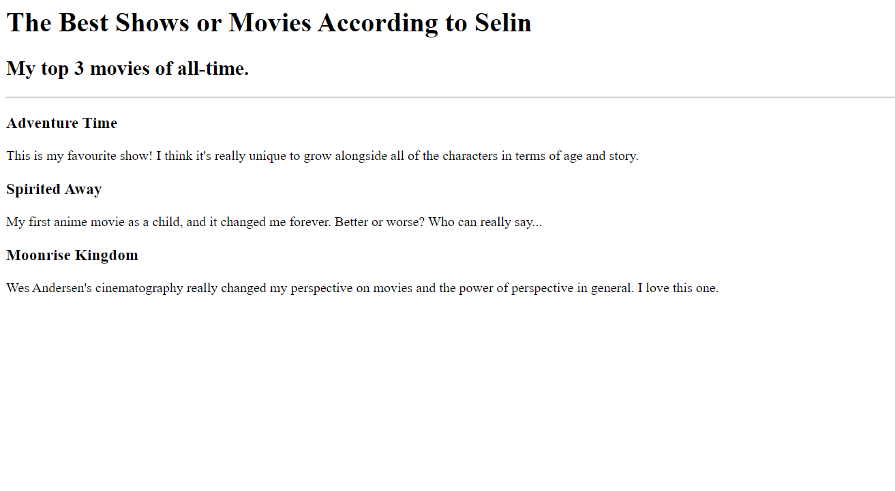
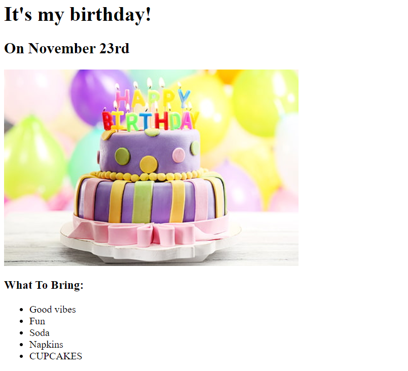
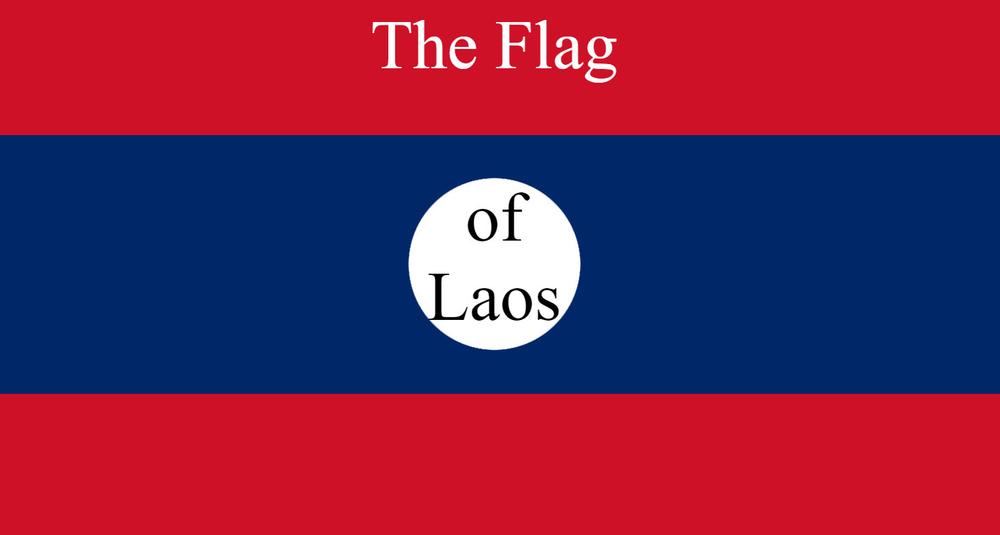

HTML Projects




Selin Saracoglu
Computer Science Portfolio
About Me
Hi there! I'm Selin, a recent graduate of Suffolk County Community College's Computer Science program. I took an interest in Computer Science after having spent most of my adolsecent life growing up on the Internet. Art, music, video games, social media--so many of my interests and hobbies in this world are enabled by things I couldn't understand, and I wanted to change that. I love learning new things, and the field of Computer Science was initially a terrifying prospect to the version of myself who had graduated from SUNY New Paltz with Theatre Arts and English degrees. Back then, I believed myself able to thrive in any course, so long as I carefully skirted any math course I could to preserve that idea.
Honestly speaking, I wasn't sure I'd be a good fit for this type of coursework at first. I avoided math whenever possible in both high school and my first time in college. I found it immensely difficult and had only found hardship and frustration both in and out of class. But out of a desire to challenge myself in returning to school, and to build a better life for myself going forward, one where I was unafraid of tackling challenges, I began college again in Precalculus. Through patience and perseverance, I overcame my aversion to math, and found myself more a little more curious with each class I took--the subject of my frustration had evolved to explain so much more than just how Computer Science works, but the world we live in as well.
Having overcome my fear of math, learned about object-oriented programming and tight-coupling, and discovered a curiousity to learn more, I found myself suddenly interested by the enormous world made of walls of text that I had once seen as insurmountable alphabet soup. Every programming class brought new challenges to myself, and I learned to not fear challenge, but to work hard through it and persevere further. There is no loss in failure, only in my fear of it! My next projects will be learning Javascript, more HTML and CSS, distancing myself from tight-coupling in my codework, and understanding coding Design Patterns.
Copyright © SELIN 2023